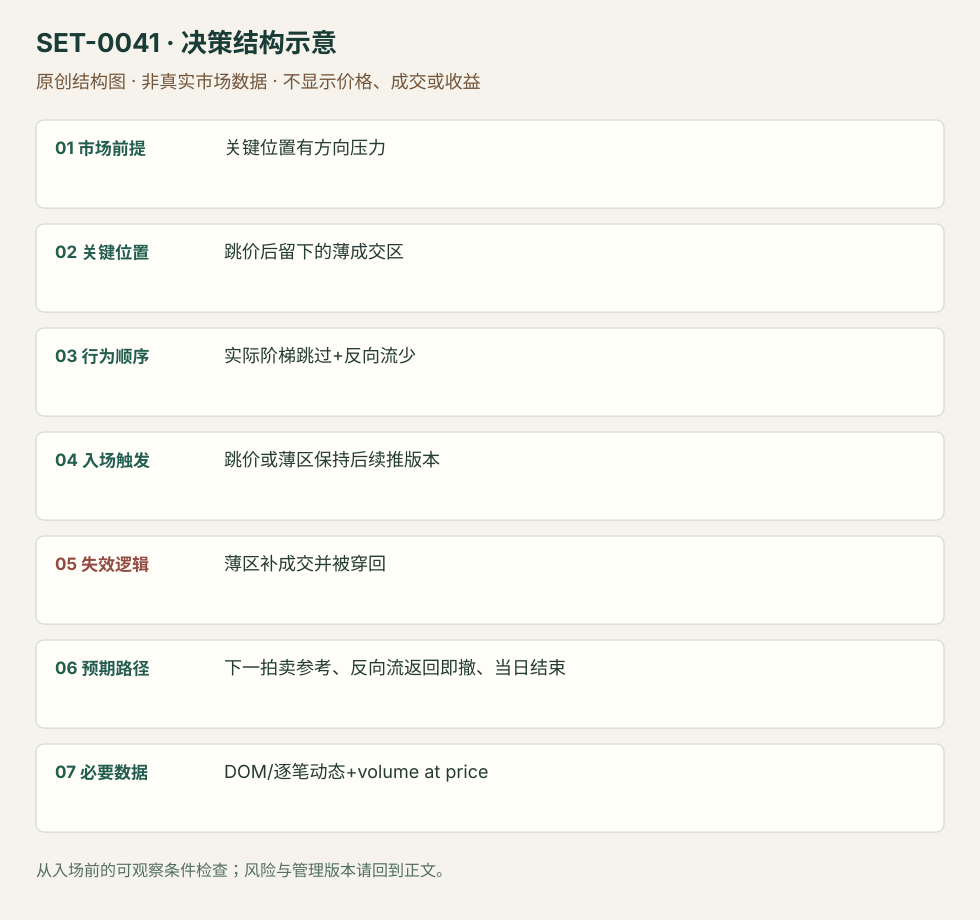

阶梯跳价后低量区保持的延续
Jump-flow Low-volume-area Continuation · SET-0041 · reviewed · v1.0.0
盈利证据：not_established。审查范围与来源版本见第13节；未知字段保留缺失原因。
1. 名称与快速概览
关键位置方向流把价格跳过数档，后方留下薄成交区；只要反向流少且薄区未被重新接受，就顺方向保持/进入。这里要求实际阶梯行为，不只一根长K线。
记录口径：PA supporting；必要数据 DOM、trade_prints、volume_at_price、OHLC。名称性质：编辑性描述名，英文保留来源术语以便检索。reviewed 只表示本条规则与证据记录审查通过，盈利状态为 not_established。
2. 本质与行为假说
薄区提示该轮拍卖快速移动，反向补成交会改变原有单向性。不能从静态DOM空白就断言stop run或保证继续；实际成交与价格响应必须同时看。
3. 适用市场与环境
来源DAX下破与ES上推后失败，产品厚薄不同。关键区和先验路线已知，跳价后仍有可执行风险空间；过快追价导致巨大滑点则跳过。
来源实用市场：DAX期货、S&P500期货。
Session：原期货图完整时区/日段未明确；按产品自己的计划session，入场与退出均限该段，电子日和现金段分别标。
跨市场：本版不主张已经验证的跨市场迁移；更换市场必须重定数据来源、流动性与session。
4. 出现前的观察清单
画事前触发区、下一目标、跳过区上下缘；保留DOM回放/逐笔。检查反向成交有没有迅速进入薄区，不能只看最终稀疏图。
5. 形成过程与状态转换
压力至关键位 → 方向流阶梯跳价 → 薄量区形成 → 回抽反向流少/无法穿回 → 顺向续推；若反向量填入则撤销。
6. Entry trigger 与执行方式
来源可在跳价出现时主动执行或靠薄区边缘维持；编辑确认版等边缘保持再续推，必须标晚入口而非填跳价前价格。
7. Invalidation 与止损逻辑
薄区被持续补成交并穿回，或关键边缘重新被接受时失效；已知边缘外硬风险。大量打印不推进是警讯，不能把有量总视为支持。
8. Exit、target 与 trade management
下一已知拍卖点；反向流回来、价格在薄区附近反复交易时减仓/退出。ES反例强调没有保持便迅速撤，而非等原极值。日内结束。
9. 常见 variations
Open Drive 留LVN归同一持续薄区逻辑；价格阶梯宽度、产品和Footprint显示方式属于版本。不是把所有LVN回测单都算本条。
10. 失败方式与不交易条件
跳价很快填回；追入后无剩余目标空间；薄区认定使用整段事后成交；把报价撤销等同已成交；静态截图误称看过速度。
11. 与相近 setups 的区别
12. 图表与案例解读
已看DAX与ES两图。DAX为支持例，ES为保持失败例；没有把同样成功叙事套两市场。动态跳价依据仅文字。
- [VIS-000043] DAX breaking lower: left side market profile with P shape, middle a price ladder chart (no important info inside), right side a candlestick chart showing false balance break to the upside and reversing to the downside；定位：DAX Jump Flow composite。作者将关键卖区、DOM薄量和IBH目标放同图，支持位置和管理参照，不能测动态速度。 验证：chart_viewed。
- [VIS-000044] ES冲高后反向穿回，提供正常失败边界。；定位：ES failed low-volume hold。ES冲高后反向穿回，提供正常失败边界。 验证：chart_viewed。


本地原创示意（VIS-000098，非真实市场数据）：

小屏阅读可打开原尺寸示意图并缩放。

此图用于对照识别顺序与风险定义；不计入真实案例覆盖率。
视觉材料元数据与查看范围
- VIS-000043 · real_source_chart / structure_and_trigger / chart_viewed
品种：DAX期货；日期：未知/不适用；周期：未知/不适用；时区：未知/不适用
日期未在图中核对；周期未在图中核对；时区未在图中核对；来源图表不是成交审计 - VIS-000044 · real_source_chart / structure_and_trigger / chart_viewed
品种：S&P500期货；日期：未知/不适用；周期：未知/不适用；时区：未知/不适用
日期未在图中核对；周期未在图中核对；时区未在图中核对；来源图表不是成交审计 - VIS-000098 · synthetic_structure_diagram / illustration_only / generated_not_market_evidence
品种：未知/不适用；日期：未知/不适用；周期：未知/不适用；时区：未知/不适用
无真实品种、日期或价格：这是结构示意
13. 证据、分歧与未知项
两个Axia例含失败，但同家族独立佐证有限。文章中的4:16/18:03是作者指向的视频位置；本研究没有播放，因此不作已核对时间码。
- [EVD-000082] Axia Futures，《Use This Volume Pattern To Manage Your Trade》，SRC-0039；定位：DAX jump flow / ES failed low-volume hold。支持：关键区压力后阶梯跳价，留下薄量区；少反向流可持有，薄区内大量换手/反向力量回来则退出，ES例失败。
- [EVD-000083] Axia Futures，《How Can Footprint Help Your Trade Execution》，SRC-0063；定位：Open Drive LVN in Footprint。支持：强开盘驱动留下低量区，可按其边缘进入/保护；仅有低量区不是独立setup。
审查边界：来源份数与独立核心核验分开；当前类别为 limited_single_family。正文中的概念、官方事实、衍生解说或同族资料只按其支持范围使用。
14. 可用于复盘的检查表
- ☐ 下单前的前提可核对：关键位置有方向压力
- ☐ 事前标记位置：跳价后留下的薄成交区
- ☐ 行为按顺序出现：实际阶梯跳过+反向流少
- ☐ 实际触发符合选定版本：跳价或薄区保持后续推版本
- ☐ 事先写明本次否定条件：薄区补成交并被穿回
- ☐ 目标/路径只用当时已知信息：下一拍卖参考、反向流返回即撤、当日结束
- ☐ 数据满足 DOM/逐笔动态+volume at price；记录时间、点差、滑点、队列和未成交
- ☐ 记录截止平仓及规则偏离；正常亏损不事后改成“未成立”
15. 后续验证问题
实际跳过档数与报价空洞怎样区分？薄区保持要等多少成交？主动追与晚确认的滑点/漏单差异？
双向相关导航
- SET-0003 关键位置吸收后的反转 主动roll需要突然反向冲击，不要求事先看到大量成交被承接。
- SET-0036 Footprint P 形上分布边缘保持 0041 必须阶梯跳过薄量区且反向流少，本条先形成厚的新接受块并靠其边缘执行。
- SET-0039 同一水平前后成交能量改变的突破 0041 的核心是阶梯跳过薄区后反向流少；本条要求同位旧尝试与新尝试强度变化。